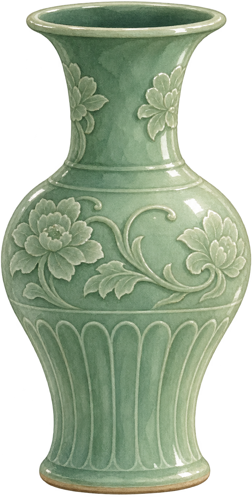

<!doctype html><html lang="zh-CN"><meta charset="utf-8"><meta name="viewport" content="width=device-width,initial-scale=1"><title>瓷光重现 · 时光回廊</title><link rel="stylesheet" href="../style.css"><link rel="stylesheet" href="revision.css?v=clean-celadon-12"><link rel="stylesheet" href="../top-wheel.css?v=larger-guide-4"><link rel="stylesheet" href="gallery-sound-control.css?v=paper-position-fix-15"><link rel="stylesheet" href="gallery-petals.css?v=1"><main><div id="scenery"></div><div class="wash"></div><header><a href="#" id="brand">瓷光重现<small>时 光 回 廊</small></a><div class="tools"><button id="fullscreen">全屏 ↗</button></div></header><section aria-live="polite"><div id="period"></div><h1 id="title"></h1><p id="description"></p></section><div id="artifact"><div id="contents" aria-label="瓶内物品"><svg class="stem-bridge" viewBox="0 0 100 100" preserveAspectRatio="none" aria-hidden="true"><g fill="none" stroke-linecap="round"><path d="M42 90 Q44 98 48 108 M45 89 Q46 100 49 108 M54 91 Q53 101 51 108" stroke="#626039" stroke-width="1.35"/><path d="M42 90 Q44 98 48 108 M45 89 Q46 100 49 108 M54 91 Q53 101 51 108" stroke="#aaa26a" stroke-width=".35"/></g></svg></div><div class="museum-light" aria-hidden="true"></div></div><div id="glass"><svg viewBox="0 0 1668 943" preserveAspectRatio="xMidYMid slice"><path d="M242 0L807 105L812 792L239 759Z" fill="#e5f5df" opacity=".04"/><path d="M785 119L786 704" stroke="#fff" stroke-width="2" opacity=".16"/><path d="M258 177L276 151L732 244L732 250Z" fill="#fff" opacity=".025"/></svg></div><aside>龙泉青瓷<span>缠枝牡丹纹凤尾尊</span></aside><nav class="time-wheel" aria-label="拖动时光轮盘"><svg class="dial-face" viewBox="0 0 600 180" aria-hidden="true"><path class="dial-base" d="M77 0 A260 260 0 0 0 523 0"/><path class="dial-progress" d="M77 0 A260 260 0 0 0 523 0" pathLength="100"/><defs><clipPath id="dialTickWindow" clipPathUnits="userSpaceOnUse"><path fill-rule="evenodd" clip-rule="evenodd" d="M37 -135 A263 263 0 1 0 563 -135 A263 263 0 1 0 37 -135 Z M57 -135 A243 243 0 1 1 543 -135 A243 243 0 1 1 57 -135 Z"/></clipPath></defs><g clip-path="url(#dialTickWindow)"><g class="ring-ticks"></g></g><g id="ticks" visibility="hidden"></g><path class="dial-pointer" d="M300 119 l5 7 -5 7 -5 -7 Z"/></svg><div class="eras"><button data-era="0"><small>01</small>佛前</button><button data-era="1"><small>02</small>书斋</button><button data-era="2"><small>03</small>旧宅</button><button data-era="3"><small>04</small>博物馆</button></div><span id="progress" aria-hidden="true"></span><p class="dial-guidance"><span class="hint-left" aria-hidden="true">←</span> 拖动轮盘 · 流转时光 <span class="hint-right" aria-hidden="true">→</span></p></nav><div id="loading">正在展开时光画卷…</div><a class="postcard-entry" id="postcard-entry" href="postcard.html?scene=0">保存为明信片</a></main><script src="gallery-sound-control.js?v=9"></script><script src="scene-audio.js?v=postcard-polish-13"></script><script src="gallery-petals.js?v=incense-trial-19"></script><script src="incense-smoke.js?v=aligned-origin-2"></script><script src="app.js?v=incense-trial-19"></script><script src="../top-wheel.js?v=readable-1"></script><script src="../card-type.js?v=2"></script><script src="postcard-entry.js?v=2"></script></html>